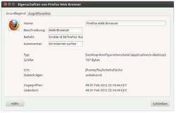

Trickle
Dieser Artikel wurde für die folgenden Ubuntu-Versionen getestet:
Ubuntu 14.04 Trusty Tahr
Zum Verständnis dieses Artikels sind folgende Seiten hilfreich:
 Das Programm Trickle
Das Programm Trickle  (englisch: tröpfeln, tropfen) wurde im März 2003 von dem norwegischen Entwickler Marius Aamodt Eriksen entwickelt. Es ist ein Traffic Shaper – also ein Programm, das die Bandbreite eines Programms (temporär) limitieren kann. Das Programm steht unter der BSD-Lizenz.
(englisch: tröpfeln, tropfen) wurde im März 2003 von dem norwegischen Entwickler Marius Aamodt Eriksen entwickelt. Es ist ein Traffic Shaper – also ein Programm, das die Bandbreite eines Programms (temporär) limitieren kann. Das Programm steht unter der BSD-Lizenz.
Hinweis:
Trickle beherrscht nur TCP-Verbindungen, was jedoch für die meisten bandbreiten-intensiven Dienste ausreichen sollte.
Hintergrund¶
Traffic-Shaping hat die Fähigkeit, verschiedene Netzwerk-Verbindungen unterschiedlich zu behandeln und somit Datenpaketen im Netzwerk unterschiedliche Prioritäten einzuräumen. Der Nutzen besteht zum Beispiel darin, dass eine bestehende Netzwerkverbindung, welche die verfügbare Bandbreite des Netzwerks vollständig ausschöpft, eine weitere Netzwerkverbindung nicht zur Gänze ausbremsen kann.
Es lässt eine spezifische Bandbreitenverteilung der unterschiedlichen Netzwerk-Protokolle zu. Falls man es in einem Router einsetzt, kann man damit auch die Netzwerk-Nutzung der angeschlossenen Rechner reglementieren. Insgesamt sorgt es für eine optimierte Abarbeitung der Datenpakete und stellt eine effiziente Ausnutzung der verfügbaren Bandbreite sicher.
Installation¶
Trickle kann über die jeweiligen Paketquellen installiert [1] werden.
trickle (universe)
 mit apturl
mit apturl
Paketliste zum Kopieren:
sudo apt-get install trickle
sudo aptitude install trickle
Nutzung¶
Trickle wird über das Terminal gesteuert [2] . Es können beliebig viele Instanzen gestartet werden. Der Grundbefehl lautet wie folgt:
trickle -d DOWNLOAD-BANDBREITE -u UPLOAD-BANDBREITE BEFEHL
BEFEHL kann dabei entweder z.B. wget oder apt-get sein, aber auch ein Programmname wie z.B. firefox. Ein Beispiel, um den Befehl zu verdeutlichen:
trickle -d 200 -u 100 ftp ftp.domain.tld
Das Programm ftp darf hier mit einer Begrenzung von 200 kB/sec (Kilobyte) herunter- und mit 100 kB/sec hochladen.
Hinweis:
Laufen andere Programm-Instanzen parallel (im obigen Falle FTP), bleiben diese von den Limitierungen verschont. Für eine Bandbreitenregulierung des gesamten Systems siehe Daemon.

Nutzerszenarien¶
Anwender, die sich und ihre Arbeit durch eine Übertragung großer Datenmengen nicht ausbremsen lassen möchten, sondern den ein- und ausgehenden Traffic ohne großen Konfigurationsaufwand und komplizierte Befehle limitieren wollen.
Webentwickler, die mit Hilfe von Trickle die Bandbreite langsamer Internetverbindungen im Browser simulieren, um die zu erstellende Webseite nicht zu überladen.
Man möchte einem Programm (als Beispiel sei Firefox genannt) dauerhaft eine Limitierung von 50 kB/sec setzen. Man erstellt einen Starter mit folgendem Befehl:
trickle -d 50 firefox %u
Nutzungsbeispiele mit Befehl¶
| Nutzungsbeispiele anhand von Trickle-Befehlen | |
| Befehl | Bedeutung |
trickle -d 100 wget http://domain.tld | begrenzt die Downloadrate von wget auf 100 kB/sec |
trickle -d 25 -u 15 firefox | begrenzt die Down- und Upload von Firefox auf 25 bzw 15 kB/sec |
trickle -d 200 apt-get upgrade | begrenzt die Downloadrate von apt-get auf 200 kB/sec |
sudo trickled -d 200 -u 100 | startet den Daemon und begrenzt systemweit die Down- und Uploads auf 200 bzw 100 kB/sec |
Befehlsübersicht¶
| Trickle – Optionen | |
| Option | Bedeutung |
-h | zeigt die Hilfe an |
-v | erweiterte Ausgaben |
-V | zeigt die Version von trickle an |
-s | Ausführung im Stand-Alone-Modus (unabhängig von trickled) |
-d | Downloadrate limitieren (KB/s) |
-u | Uploadrate limitieren (KB/s) |
-f | im Vordergrund laufen lassen |
-N | alle N Sekunden Ausgabe einer Statistik |
-w | Anzahl der Bytes in denen Trickle versucht, Traffic-Spitzen zu vermeiden |
-t | Time-Smoothing (verhindert große Schwankungen der Rate) |
-l | Length-Smoothing (dient auch als Fallback des Time-Smoothing, verhindert große Schwankungen der Rate) |
-c | Pfad einer alternativen /etc/trickled.conf (Default) |
Konfiguration¶
Die Konfiguration von trickle kann mit einem Editor [3] über die Datei /etc/trickled.conf vorgenommen werden. Niedrige Werte stehen dabei für eine hohe Priorität. Die Datenpakete ordnet Trickle „intern“ in einer eigenen Warteschlange entsprechend um. Im unteren Beispiel hat also der Dienst ssh eine höhere Priorität (1) als FTP mit dem Wert 8.
Startet man Trickle, überprüft es, ob trickled, der Daemon, läuft. Ist dieser aktiv, übernimmt es die dort angegebenen Parameter und die dort hinterlegten Programme. Werden dem Befehl trickle Parameter mitgegeben, so setzen diese die Konfigurationsdatei /etc/trickled.conf außer Kraft.
1 2 3 4 5 6 7 8 9 10 | # this file is an example for a system-wide or personal settings file # for trickle (see manual pages for trickle, trickled and trickled.conf # below are two examples that should be self-explaining # [ssh] # Priority = 1 # [ftp] # Priority = 8 # Time-Smoothing = 5.5 # Length-Smoothing = 20 |
Die Parameter Time-Smoothing (-t) und Length-Smoothing (-l) sollen große Schwankungen der Raten verhindern. Über die Konfigurationsdatei trickled.conf lassen sich die Parameter – im Gegensatz zum Terminalbefehl – für jeden Dienst einzeln einstellen.
Der Parameter Time-Smoothing gibt in diesem Beispiel an, dass über einen Zeitraum von fünfeinhalb Sekunden FTP ungehindert Daten verschicken und empfangen können. Über den Parameter Length-Smoothing regelt Trickle, dass FTP 20 Bytes verschicken und empfangen darf.
Weitere Details sind der Manpage von trickle zu entnehmen.
Hinweis:
Zur Übertragung großer Datenmengen sollte man eher größere Werte einstellen.
Daemon (trickled)¶
Möchte man den Netzwerkverkehr generell limitieren, sollte der Dienst oder Daemon trickled genutzt werden. Dieser protokolliert im Gegensatz zu trickle alle Trickle-Verbindungen und regelt so die Gesamtbandbreite. Auch der Daemon kennt die oben angegebenen Parameter. Ein Beispiel:
trickled -d 50 -u 5 -f -N 5
Die gesamte Download-Rate (-d) wird auf 50 kB/sec und die Upload-Rate (-u) auf 5 kB/sec festgelegt. Der Parameter -f lässt den Daemon im Vordergrund laufen, -N 5 gibt alle fünf Sekunden eine Statistik aus. Die Ausgabe sieht dann wie folgt aus:
trickled -d 50 -u 5 -f -N 5 trickled: UPLOAD total: avg: 4.4 KB/s; win: 4.8 KB/s trickled: DOWNLOAD total: avg: 47.6 KB/s; win: 49.2 KB/s
Gibt man man keinerlei Downloadparameter (-d) an, legt Trickle sowohl Upload- als auch Downloadrate auf 10 kB/sec fest. Der Daemon liest die Konfigurationsdatei /etc/trickled.conf für dauerhafte Einstellungen aus.
Ist der Daemon aktiv, nimmt Trickle (respektive alle Trickle-Instanzen, sollten mehrere laufen) beim Start mit diesem Kontakt auf und regelt nach dessen Vorgaben die jeweiligen Clientprogramme.
Traffic-Shaping beenden¶
Eine gestartete Bandbreitenbeschränkung lässt sich auf zweierlei Art aufheben und geschieht in Abhängigkeit des vorherigen Aufrufes.
Trickle beenden¶
Die Beschränkung eines per Trickle gestarteten Programmes wird beendet, indem man es schließt. Das Terminal in dem man Trickle (und das Programm) startete, kann man nach dem Aufruf schließen – das Programm läuft davon unbeirrt weiter.
Ein Beispiel: Hat man beispielsweise den Browser Firefox per Trickle in einem Terminal gestartet, so kann man die Konsole nach dem Aufruf schließen. Firefox läuft weiter und ist so lange „begrenzt“, bis der Browser selbst geschlossen wird. Erst dann wird Trickle beendet und damit die Firefox-Begrenzung aufgehoben.
Daemon beenden¶
Möchte man den Daemon beenden, so stoppt man diesen im Terminal (siehe Prozess abbrechen) oder hält diesen an (siehe Prozess anhalten). Im Gegensatz zum Programmaufruf von Trickle muss das Terminal, startet man den Daemon nicht im Hintergrund, bei der Nutzung des Daemons geöffnet bleiben.
Links¶
trickle: Bandwidth shaper operating entirely in user mode
 - 04/2005 (PDF)
- 04/2005 (PDF)Erklärungen/Vertiefendes:
Skripte/Traffic-Shaping – Traffic-Shaping mittels Skripts (via Traffic-Control (tc) des Kernels)
Berichterstattung:
Bandbreitenbegrenzung - Traffic Shaping mit trickle – TecChannel 02/2012
Trickle - Bandbreite unter Ubuntu einfach verwalten – Blogbeitrag 01/2012
Durchsatz regeln - Downloads beschleunigen mit Trickle – Linux Community 11/2005
- Erstellt mit Inyoka
-
 2004 – 2017 ubuntuusers.de • Einige Rechte vorbehalten
2004 – 2017 ubuntuusers.de • Einige Rechte vorbehalten
Lizenz • Kontakt • Datenschutz • Impressum • Serverstatus -
Serverhousing gespendet von